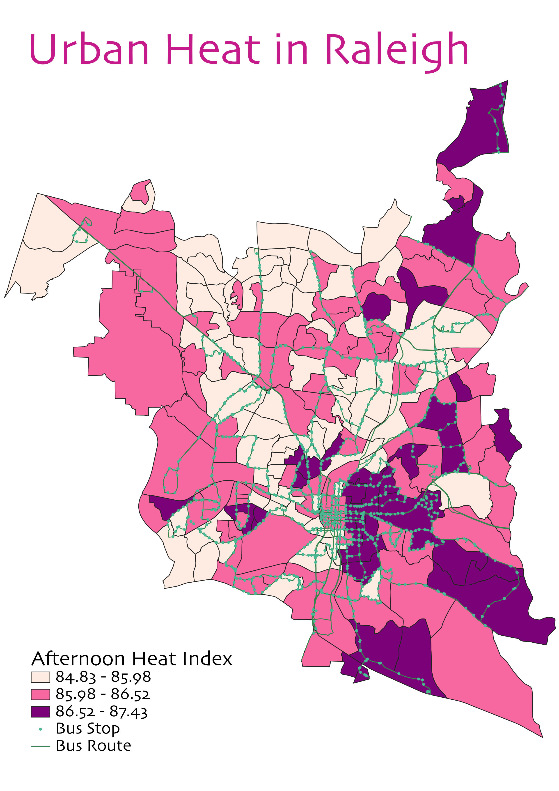
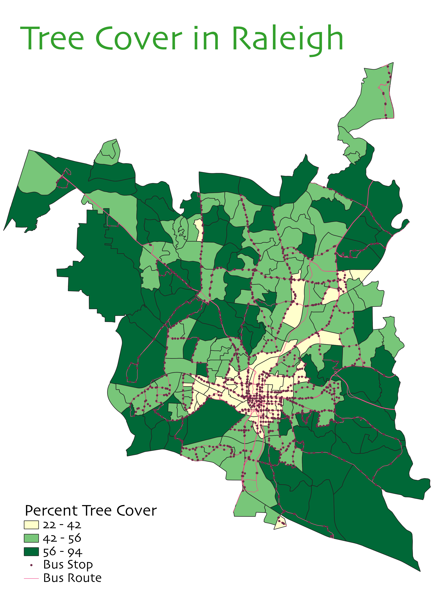
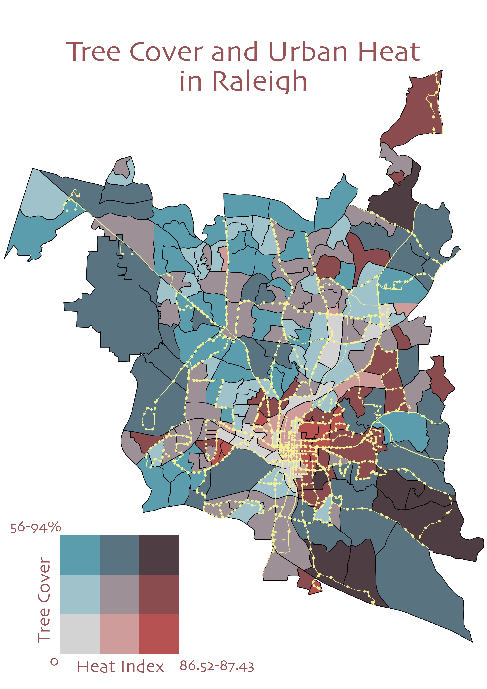
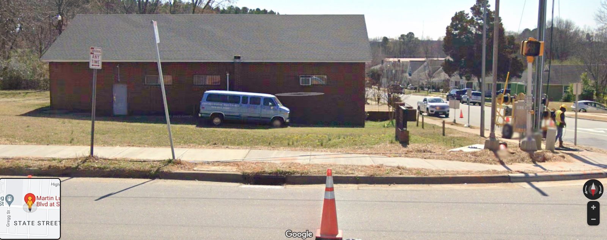
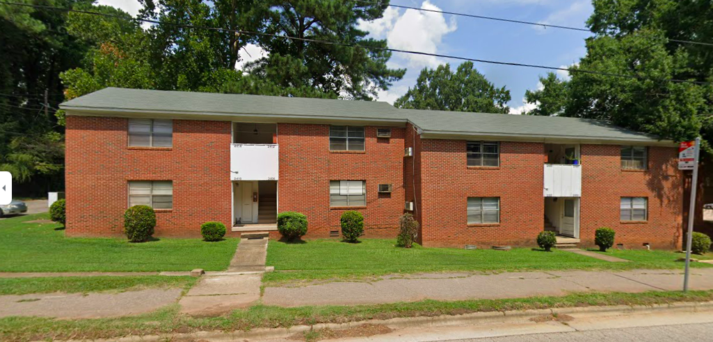

Urban Heat Islands and Tree Cover
North Carolina is experiencing a rise in temperatures, high enough to cause heat exhaustion and heat stroke to citizens. Citizens who ride public transit, having to wait outside for their bus (as well as walking to and from the bus station),
are at a further risk of high urban heat exposure.
Studies show that those who are poor, 65 years old or older, overweight, have heart disease, or regularly consume high volumes of alcohol, are more likely to experience heat stroke.
There is, unfortunately a lot of overlap where those outside in these hot temperatures and humid climate, are prone to succumbing to heat exhaustion or heat stroke.
43% of people riding public transportation are poor (based a Wake County living wage of $19.23), and in a survey on the mode of transport locals used to the bus stop, 72% of respondents said they walked.
Given these statistics, heat and tree cover data of Raleigh, NC was analyzed to see how those variables interact and could potentially impact users of public transportation.



Indeed, when zooming in on bus stops in areas of low tree cover and high heat in Google Maps, the following examples of bus stops are seen:


Data Used for This Project:
Urban Heat Data
Bus Stops, Bus Routes, and Area Polygons
Sources:
“A Report on the Community Survey of Adults in Wake, Durham, and
Orange Counties North Carolina”
“Heat Related Illness," CDC
Living Wage Calculator, MIT